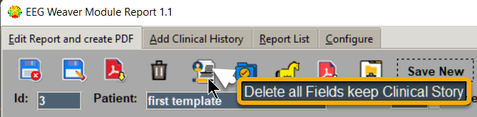
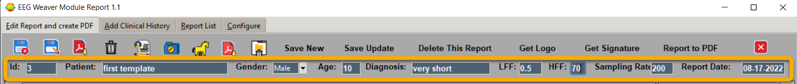
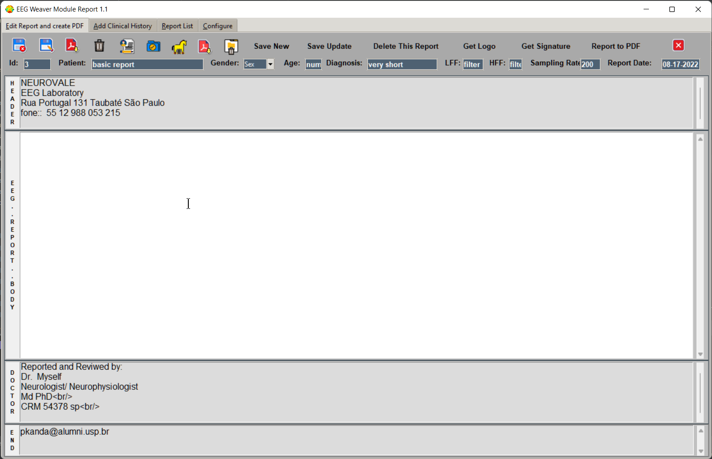
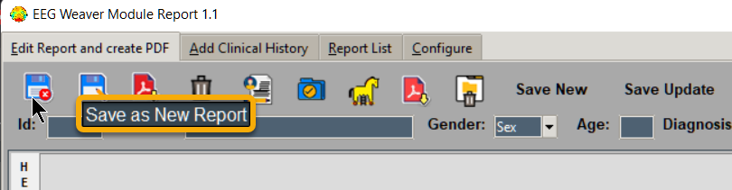
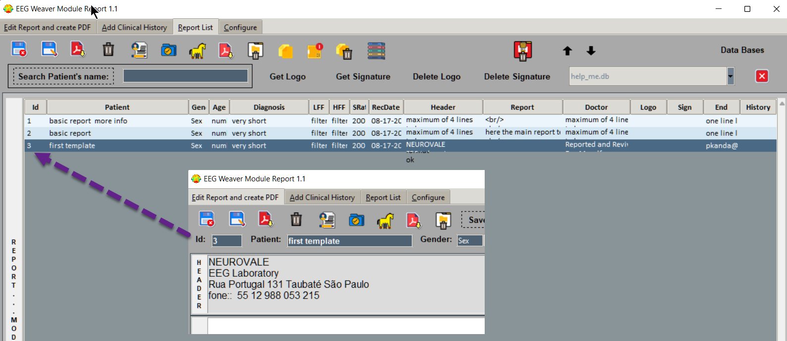

Create First Template
Start writing your first report or template (a model for reuse).
If needed you can clean all fields of this tab before start writing
After that you can start the report.
Identification fields:
Id: it is automatically filled.
Patient: use a reference, number, name, anything, be objective.
Gender, Age: you can change it any time.
Diagnosis: just for reference, be concise.
Next values insert here your equipment settings:
LFF: Low Frequency Filter, generally 0.5 (values in Hz).
HFF: High Frequency Filter, generally 70-100 (values in Hz).
Sampling Rate: minimum is 200, good 1000 to 2000.
Report Date: pass.
In “Header” just four lines, to keep formatting ok.
In “EEG Body Report”, you can write all needed text because new pages are created automatically. When creating a template let “EEG Body Report” be empty.
In “Doctor” three or four lines.
In “End” you insert one line text, for example, your email.
Now click in “Save Button”.
Each time “Save Button” is clicked it creates a new copy of report in use. After saving check list in “Report List” (Tab 3), it is showing the new created report (check ID number).